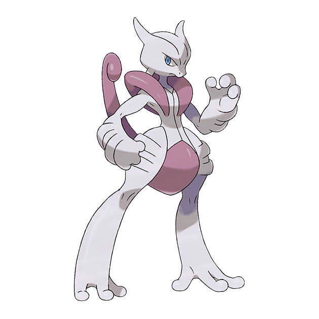
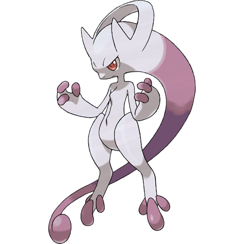
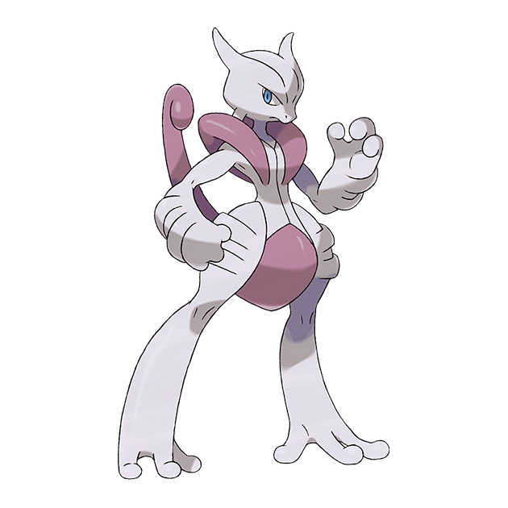
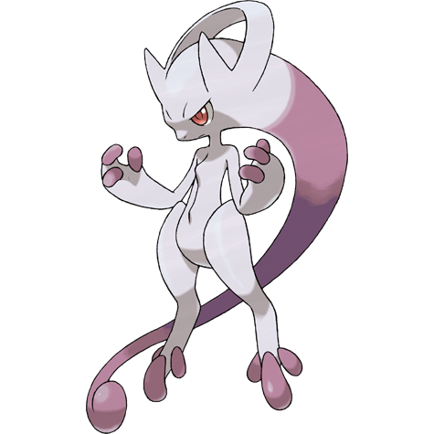

Home
Home Contact Us
Contact Us Galery
Galery Out Of Topic
Out Of Topic Event
Event 

According to the scientific logs found in the Pokémon Mansion of Cinnabar Island, Mewtwo was born from a pregnant Mew, found deep in the jungles of Guyana, whose embryo had been tampered with to alter its DNA. It was held and studied in the mansion where a scientist performed horrific gene-splicing experiments that made it vicious and extremely powerful. It eventually broke free of the Mansion, destroying it in the process, and fled. It can be encountered in Cerulean Cave, accessible only after a Trainer has proven their skill at the Indigo Plateau.
Mewtwo is an artificial Pokémon. It is a bipedal, humanoid Pokémon with some feline features. It is primarily gray with a long, purple tail. On top of its head are two short, blunt horns, and it has purple eyes. A tube extends from the back of its skull to the top of its spine, bypassing its neck. It has a defined chest and shoulders, which resemble a breastplate. The three digits on each hand and foot have spherical tips. Its tail is thick at the base but thins before ending in a small bulb.
Mewtwo was created after years of horrific gene splicing and DNA engineering experiments based on Mew. It is widely known as the most powerful Pokémon in existence and is said to have the most savage heart among all Pokémon, lacking compassion and striking fear into its enemy with cold, glowing eyes. Because it was engineered to be the ultimate opponent in battle, it can only think of defeating its foes. In the first movie, where it was shown to be capable of levitation, telepathy, mind control, and the ability to create powerful storms, Mewtwo exemplified these vicious characteristics. However, it was later shown to be caring, protective, and even altruistic. Another Mewtwo in the anime shared its aversion to contact with others but was much less belligerent. Mewtwo conserves energy by remaining motionless in order to unleash its full power in battle. Though rarely seen in the wild, it is said to be resting in a dark cave somewhere.
Mega Mewtwo X is larger and bulkier than its normal state. The horns on its head are longer and extend from V-shaped ridges on its forehead. Additionally, the horns are now pointed and curve upward. It now has two tubes behind its neck, its eyes are light blue, and it has large, purple growths over its shoulders. Its torso is smooth and small compared to its long, bulky limbs, and a Y-shaped line connects the collar and underbelly. Its forearms and thighs each have two raised ridges and its digits are now longer and thinner. Its tail is slightly shorter and stiffer than before and has a curled tip. Its muscles are augmented with psychic power, giving it a grip strength of one ton and the ability to sprint 100 meters in two seconds. When using moves in battle, it is shown to be able to stretch its arms and legs.
Mega Mewtwo Y is smaller and lighter, losing its long tail and the tube behind its neck. However, it grows a long, purple appendage with a curled tip from the back of its head that is similar to its previous form's tail. On its head, it has two pointed, backward-curving spikes and a half-ring structure connecting to the base of each and crossing over the top of its head. Its eyes are now red and slightly larger. The digits on its hands and feet are now purple and more bulbous and the middle toe is longer than the others. A bumpy ridge similar to a sternum replaces the breastplate structure on its chest, but this form is still largely smoother than the other two. Despite its decreased size, it has phenomenal mental power and is capable of smashing buildings with a mere thought. Mewtwo is the only known Pokémon capable of learning the move Psystrike.